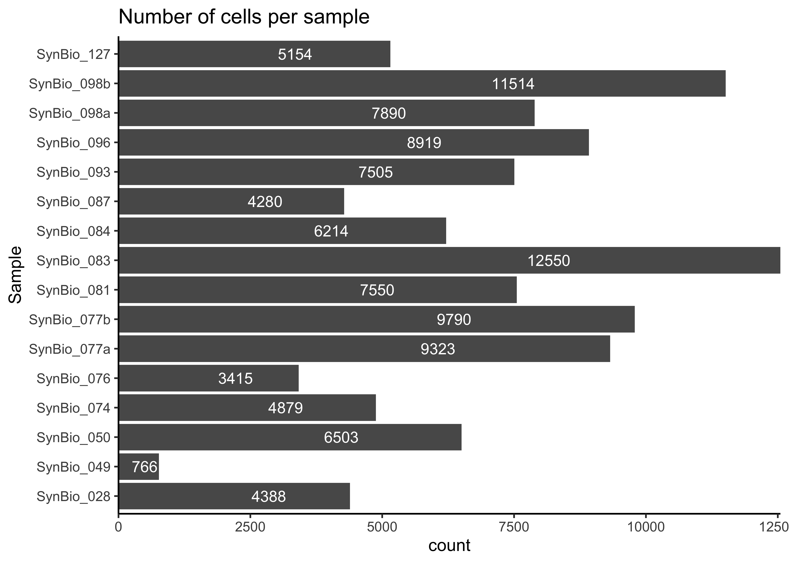

Data Preparation
00_DataPreparation
SarahL.
Apr 2 2024 16:29:48
Last updated: 2024-04-02
Checks: 6 1
Knit directory: RA_SingleCellAnalysis/
This reproducible R Markdown analysis was created with workflowr (version 1.7.1). The Checks tab describes the reproducibility checks that were applied when the results were created. The Past versions tab lists the development history.
Great! Since the R Markdown file has been committed to the Git repository, you know the exact version of the code that produced these results.
Great job! The global environment was empty. Objects defined in the global environment can affect the analysis in your R Markdown file in unknown ways. For reproduciblity it’s best to always run the code in an empty environment.
The command set.seed(20240328) was run prior to running
the code in the R Markdown file. Setting a seed ensures that any results
that rely on randomness, e.g. subsampling or permutations, are
reproducible.
Great job! Recording the operating system, R version, and package versions is critical for reproducibility.
Nice! There were no cached chunks for this analysis, so you can be confident that you successfully produced the results during this run.
Using absolute paths to the files within your workflowr project makes it difficult for you and others to run your code on a different machine. Change the absolute path(s) below to the suggested relative path(s) to make your code more reproducible.
| absolute | relative |
|---|---|
| /Volumes/Elements/Masterthesis/RA_SingleCellAnalysis/ | . |
| /Volumes/Elements/Masterthesis/RA_SingleCellAnalysis/output/ | output |
Great! You are using Git for version control. Tracking code development and connecting the code version to the results is critical for reproducibility.
The results in this page were generated with repository version 9e3e00a. See the Past versions tab to see a history of the changes made to the R Markdown and HTML files.
Note that you need to be careful to ensure that all relevant files for
the analysis have been committed to Git prior to generating the results
(you can use wflow_publish or
wflow_git_commit). workflowr only checks the R Markdown
file, but you know if there are other scripts or data files that it
depends on. Below is the status of the Git repository when the results
were generated:
Ignored files:
Ignored: .Rhistory
Ignored: .Rproj.user/
Ignored: data/cellbender_data_h5/
Ignored: data/metadata/
Ignored: output/00_sce_DataPreparation.rds
Unstaged changes:
Modified: analysis/01_Preprocessing.Rmd
Note that any generated files, e.g. HTML, png, CSS, etc., are not included in this status report because it is ok for generated content to have uncommitted changes.
These are the previous versions of the repository in which changes were
made to the R Markdown (analysis/00_DataPreparation.Rmd)
and HTML (docs/00_DataPreparation.html) files. If you’ve
configured a remote Git repository (see ?wflow_git_remote),
click on the hyperlinks in the table below to view the files as they
were in that past version.
| File | Version | Author | Date | Message |
|---|---|---|---|---|
| Rmd | 9e3e00a | sarloet | 2024-04-02 | commit changes |
| Rmd | d291fd3 | sarloet | 2024-04-02 | initial commit |
| html | d291fd3 | sarloet | 2024-04-02 | initial commit |
Data Preparation and Overview
Setup
Load Packages
#Load Packages
suppressPackageStartupMessages({
library(BiocParallel)
library(ggplot2)
library(dplyr)
library(DropletUtils)
library(scater)
})Set params
set.seed(100)
bpp <- BiocParallel::MulticoreParam(parallel::detectCores()-1)
path <- "/Volumes/Elements/Masterthesis/RA_SingleCellAnalysis/"View CellRanger output
View CellBender output
Load Data
## RA DATASET
rawdata_folder <- paste0(path,"data/cellbender_data_h5/")
#Get file names
filenames <- list.files(rawdata_folder ,recursive = F, full.names = F,pattern = "\\_filtered.h5$")
filepaths <- paste(rawdata_folder,filenames,sep = "")
#Load data as sce object
sce<-read10xCounts(samples = filepaths, sample.names = filenames,col.names=T,type="HDF5")
colData(sce)$Sample = sub("\\_w_introns.*", "", sub("cellbender_output_", "", as.character(colData(sce)$Sample)))
sceclass: SingleCellExperiment
dim: 36601 119652
metadata(1): Samples
assays(1): counts
rownames(36601): ENSG00000243485 ENSG00000237613 ... ENSG00000278817
ENSG00000277196
rowData names(3): ID Symbol Type
colnames(119652): 1_AAGTACCGTCTCTCAC-1 1_GACTCTCAGGTAACTA-1 ...
17_AGGTGTTGTGGCATCC-1 17_GCCAGCACACAAGTGG-1
colData names(2): Sample Barcode
reducedDimNames(0):
mainExpName: NULL
altExpNames(0):Load and add Metadata
#Metadata path
metadata_folder <- paste0(path,"data/metadata/Metadata_Master.csv")
#Load metadata
metadata_df <-read.csv(metadata_folder, header=TRUE, sep=",")
metadata_df sample orig.ident Age sex protocol Joint.Location
1 Syn_Bio_028 SynBio028_10000 79.00000 female Protocol 1 MCP
2 Syn_Bio_049 SynBio049 69.00000 female Protocol 1 MCP
3 Syn_Bio_050 SynBio050 79.00000 female Protocol 1 Wrist
4 Syn_Bio_074 SynBio074 38.00000 female Protocol 1 Wrist
5 Syn_Bio_076 SynBio076 75.00000 female Protocol 2 MCP
6 Syn_Bio_077a SynBio077a 62.00000 female Protocol 2 Knee
7 Syn_Bio_077b SynBio077b 62.00000 female Protocol 2 Wrist
8 Syn_Bio_081 SynBio081 47.00000 female Protocol 2 MCP
9 Syn_Bio_083 SynBio083 58.00000 female Protocol 2 Wrist
10 Syn_Bio_084 SynBio084 54.00000 female Protocol 2 Wrist
11 Syn_Bio_087 SynBio087 55.00000 female Protocol 2 MCP
12 Syn_Bio_093 SynBio093 30.00000 female Protocol 2 Knee
13 Syn_Bio_096 SynBio096 67.00000 female Protocol 2 Knee
14 Syn_Bio_098a SynBio098a 56.00000 male Protocol 2 Knee
15 Syn_Bio_098b SynBio098b 56.00000 male Protocol 2 Wrist
16 Syn_Bio_127 SynBio127 38.00000 female Protocol 2 Knee
17 Syn_Bio_130 SynBio130 45.00000 female Protocol 2 MCP
18 RA934A1 SynBioRA934A1 73.00000 female external Knee
19 NA
20 Mean 57.81250
21 SD 14.47397
Diagnosis Pathotype Krenn.total.score CD15 Vascularisation
1 Gout lympho-myeloid 5.000000 no <5
2 RA fibroid 2.000000 no <3
3 RA lympho-myeloid 8.000000 yes 5-10
4 RA lympho-myeloid 4.000000 no 5-10
5 RA fibroid NA <NA> <NA>
6 RA lympho-myeloid 5.000000 yes <5
7 RA lympho-myeloid 5.000000 yes 5-10
8 RA lympho-myeloid 4.000000 yes >10
9 RA lympho-myeloid 6.000000 yes 10-15
10 RA diffuse-myeloid 4.000000 yes 5-10
11 RA diffuse-myeloid NA yes >10
12 RA fibroid 4.000000 yes 5-10
13 RA fibroid 4.000000 no <5
14 RA lympho-myeloid NA yes >20
15 RA fibroid 3.000000 yes 10-15
16 RA diffuse-myeloid 5.000000 no >10
17 RA lympho-myeloid NA yes >10
18 RA NA
19 NA
20 4.538462
21 1.450022
Lymphoidfollicle Fibrosis GCTreatment DMARDTreatment
1 no no yes no
2 no low no TNFi
3 yes no yes no
4 yes intermediate no TNFi
5 <NA> <NA> yes CTLA4i
6 yes low no TNFi
7 yes low no TNFi
8 no low no CTLA4i
9 yes low yes JAKi
10 no low no JAKi
11 no low no TNFi
12 no low no JAKi
13 yes low no TNFi
14 no intermediate no TNFi
15 no low no TNFi
16 no low no TNFi
17 no low no TNFi
18
19
20
21
NR.previous.DMARD.Treatments Seropositivity HLAB.27 Ultrasound.B.Score
1 2 seronegative <NA> 3
2 8 seropositive <NA> 2
3 0 seronegative negative 3
4 1 seronegative negative 2
5 9 seropositive negative 1
6 2 seronegative negative 3
7 2 seronegative negative 3
8 2 seropositive negative 3
9 3 seropositive negative 3
10 8 seropositive negative 3
11 8 seropositive <NA> 3
12 7 seropositive negative 3
13 2 seropositive negative 3
14 7 seropositive negative 3
15 7 seropositive negative 3
16 7 seropositive <NA> 3
17 2 seropositive <NA> 3
18 NA NA
19 NA NA
20 NA NA
21 NA NA
Ultrasound.PD.Score CRP SJC Largejoints.Involvement Smoking BMI
1 3 30.00000 2.000000 no no 20.1
2 1 16.00000 13.000000 yes no NA
3 2 13.00000 18.000000 no no NA
4 1 0.90000 8.000000 no no 21.4
5 1 5.40000 7.000000 no no 36.0
6 1 28.00000 14.000000 yes yes NA
7 3 28.00000 14.000000 yes yes NA
8 3 31.00000 10.000000 no yes 20.1
9 2 8.90000 5.000000 yes <NA> NA
10 2 22.00000 10.000000 no yes 27.7
11 2 6.40000 15.000000 yes no 20.3
12 2 29.00000 9.000000 yes no 22.1
13 2 27.00000 6.000000 yes yes 21.5
14 3 75.00000 6.000000 yes no 23.9
15 2 75.00000 6.000000 yes no 23.9
16 2 4.30000 3.000000 yes yes 19.4
17 2 10.00000 2.000000 No no 23.9
18 NA NA NA NA
19 NA NA NA NA
20 NA 24.99375 9.125000 NA
21 NA 22.10826 4.602536 NA
Comments
1 File SynBio028_10000
2
3
4
5
6
7
8
9
10
11
12
13
14
15
16
17
18
19
20
21 #Add metadata to sce
colData(sce) <- dplyr::left_join(as.data.frame(colData(sce)),
metadata_df,
by= c("Sample" = "orig.ident"),
suffix=c(".x",".y")) %>%
#dplyr::select(Sample, Barcode, Diagnosis, sex, Age, Joint.Location, protocol, Pathotype,Krenn total score,) %>%
dplyr::select(-one_of("Comments")) %>%
DataFrame(row.names=colnames(sce))
#make row and col names unique
colnames(sce) <- paste0(sce$Sample, ".", sce$Barcode)
rownames(sce) <- paste0(rowData(sce)$ID, ".", rowData(sce)$Symbol)
sceclass: SingleCellExperiment
dim: 36601 119652
metadata(1): Samples
assays(1): counts
rownames(36601): ENSG00000243485.MIR1302-2HG ENSG00000237613.FAM138A
... ENSG00000278817.AC007325.4 ENSG00000277196.AC007325.2
rowData names(3): ID Symbol Type
colnames(119652): SynBio028_10000.AAGTACCGTCTCTCAC-1
SynBio028_10000.GACTCTCAGGTAACTA-1 ... SynBio130.AGGTGTTGTGGCATCC-1
SynBio130.GCCAGCACACAAGTGG-1
colData names(26): Sample Barcode ... Smoking BMI
reducedDimNames(0):
mainExpName: NULL
altExpNames(0):Explore dataset
#Dimensions of count matrix
dim(sce)[1] 36601 119652#Feautures/row data
colData(sce)DataFrame with 119652 rows and 26 columns
Sample Barcode
<character> <character>
SynBio028_10000.AAGTACCGTCTCTCAC-1 SynBio028_10000 AAGTACCGTCTCTCAC-1
SynBio028_10000.GACTCTCAGGTAACTA-1 SynBio028_10000 GACTCTCAGGTAACTA-1
SynBio028_10000.GTTCCGTAGCATACTC-1 SynBio028_10000 GTTCCGTAGCATACTC-1
SynBio028_10000.AAACGAAGTAGTCCTA-1 SynBio028_10000 AAACGAAGTAGTCCTA-1
SynBio028_10000.TACTTGTAGCAGGCAT-1 SynBio028_10000 TACTTGTAGCAGGCAT-1
... ... ...
SynBio130.CATTGAGGTTATAGCC-1 SynBio130 CATTGAGGTTATAGCC-1
SynBio130.GTCGCGACATATGAAG-1 SynBio130 GTCGCGACATATGAAG-1
SynBio130.GTTGTAGTCGCCTCTA-1 SynBio130 GTTGTAGTCGCCTCTA-1
SynBio130.AGGTGTTGTGGCATCC-1 SynBio130 AGGTGTTGTGGCATCC-1
SynBio130.GCCAGCACACAAGTGG-1 SynBio130 GCCAGCACACAAGTGG-1
sample Age sex
<character> <numeric> <character>
SynBio028_10000.AAGTACCGTCTCTCAC-1 Syn_Bio_028 79 female
SynBio028_10000.GACTCTCAGGTAACTA-1 Syn_Bio_028 79 female
SynBio028_10000.GTTCCGTAGCATACTC-1 Syn_Bio_028 79 female
SynBio028_10000.AAACGAAGTAGTCCTA-1 Syn_Bio_028 79 female
SynBio028_10000.TACTTGTAGCAGGCAT-1 Syn_Bio_028 79 female
... ... ... ...
SynBio130.CATTGAGGTTATAGCC-1 Syn_Bio_130 45 female
SynBio130.GTCGCGACATATGAAG-1 Syn_Bio_130 45 female
SynBio130.GTTGTAGTCGCCTCTA-1 Syn_Bio_130 45 female
SynBio130.AGGTGTTGTGGCATCC-1 Syn_Bio_130 45 female
SynBio130.GCCAGCACACAAGTGG-1 Syn_Bio_130 45 female
protocol Joint.Location Diagnosis
<character> <character> <character>
SynBio028_10000.AAGTACCGTCTCTCAC-1 Protocol 1 MCP Gout
SynBio028_10000.GACTCTCAGGTAACTA-1 Protocol 1 MCP Gout
SynBio028_10000.GTTCCGTAGCATACTC-1 Protocol 1 MCP Gout
SynBio028_10000.AAACGAAGTAGTCCTA-1 Protocol 1 MCP Gout
SynBio028_10000.TACTTGTAGCAGGCAT-1 Protocol 1 MCP Gout
... ... ... ...
SynBio130.CATTGAGGTTATAGCC-1 Protocol 2 MCP RA
SynBio130.GTCGCGACATATGAAG-1 Protocol 2 MCP RA
SynBio130.GTTGTAGTCGCCTCTA-1 Protocol 2 MCP RA
SynBio130.AGGTGTTGTGGCATCC-1 Protocol 2 MCP RA
SynBio130.GCCAGCACACAAGTGG-1 Protocol 2 MCP RA
Pathotype Krenn.total.score CD15
<character> <numeric> <character>
SynBio028_10000.AAGTACCGTCTCTCAC-1 lympho-myeloid 5 no
SynBio028_10000.GACTCTCAGGTAACTA-1 lympho-myeloid 5 no
SynBio028_10000.GTTCCGTAGCATACTC-1 lympho-myeloid 5 no
SynBio028_10000.AAACGAAGTAGTCCTA-1 lympho-myeloid 5 no
SynBio028_10000.TACTTGTAGCAGGCAT-1 lympho-myeloid 5 no
... ... ... ...
SynBio130.CATTGAGGTTATAGCC-1 lympho-myeloid NA yes
SynBio130.GTCGCGACATATGAAG-1 lympho-myeloid NA yes
SynBio130.GTTGTAGTCGCCTCTA-1 lympho-myeloid NA yes
SynBio130.AGGTGTTGTGGCATCC-1 lympho-myeloid NA yes
SynBio130.GCCAGCACACAAGTGG-1 lympho-myeloid NA yes
Vascularisation Lymphoidfollicle Fibrosis
<character> <character> <character>
SynBio028_10000.AAGTACCGTCTCTCAC-1 <5 no no
SynBio028_10000.GACTCTCAGGTAACTA-1 <5 no no
SynBio028_10000.GTTCCGTAGCATACTC-1 <5 no no
SynBio028_10000.AAACGAAGTAGTCCTA-1 <5 no no
SynBio028_10000.TACTTGTAGCAGGCAT-1 <5 no no
... ... ... ...
SynBio130.CATTGAGGTTATAGCC-1 >10 no low
SynBio130.GTCGCGACATATGAAG-1 >10 no low
SynBio130.GTTGTAGTCGCCTCTA-1 >10 no low
SynBio130.AGGTGTTGTGGCATCC-1 >10 no low
SynBio130.GCCAGCACACAAGTGG-1 >10 no low
GCTreatment DMARDTreatment
<character> <character>
SynBio028_10000.AAGTACCGTCTCTCAC-1 yes no
SynBio028_10000.GACTCTCAGGTAACTA-1 yes no
SynBio028_10000.GTTCCGTAGCATACTC-1 yes no
SynBio028_10000.AAACGAAGTAGTCCTA-1 yes no
SynBio028_10000.TACTTGTAGCAGGCAT-1 yes no
... ... ...
SynBio130.CATTGAGGTTATAGCC-1 no TNFi
SynBio130.GTCGCGACATATGAAG-1 no TNFi
SynBio130.GTTGTAGTCGCCTCTA-1 no TNFi
SynBio130.AGGTGTTGTGGCATCC-1 no TNFi
SynBio130.GCCAGCACACAAGTGG-1 no TNFi
NR.previous.DMARD.Treatments Seropositivity
<integer> <character>
SynBio028_10000.AAGTACCGTCTCTCAC-1 2 seronegative
SynBio028_10000.GACTCTCAGGTAACTA-1 2 seronegative
SynBio028_10000.GTTCCGTAGCATACTC-1 2 seronegative
SynBio028_10000.AAACGAAGTAGTCCTA-1 2 seronegative
SynBio028_10000.TACTTGTAGCAGGCAT-1 2 seronegative
... ... ...
SynBio130.CATTGAGGTTATAGCC-1 2 seropositive
SynBio130.GTCGCGACATATGAAG-1 2 seropositive
SynBio130.GTTGTAGTCGCCTCTA-1 2 seropositive
SynBio130.AGGTGTTGTGGCATCC-1 2 seropositive
SynBio130.GCCAGCACACAAGTGG-1 2 seropositive
HLAB.27 Ultrasound.B.Score
<character> <integer>
SynBio028_10000.AAGTACCGTCTCTCAC-1 NA 3
SynBio028_10000.GACTCTCAGGTAACTA-1 NA 3
SynBio028_10000.GTTCCGTAGCATACTC-1 NA 3
SynBio028_10000.AAACGAAGTAGTCCTA-1 NA 3
SynBio028_10000.TACTTGTAGCAGGCAT-1 NA 3
... ... ...
SynBio130.CATTGAGGTTATAGCC-1 NA 3
SynBio130.GTCGCGACATATGAAG-1 NA 3
SynBio130.GTTGTAGTCGCCTCTA-1 NA 3
SynBio130.AGGTGTTGTGGCATCC-1 NA 3
SynBio130.GCCAGCACACAAGTGG-1 NA 3
Ultrasound.PD.Score CRP SJC
<integer> <numeric> <numeric>
SynBio028_10000.AAGTACCGTCTCTCAC-1 3 30 2
SynBio028_10000.GACTCTCAGGTAACTA-1 3 30 2
SynBio028_10000.GTTCCGTAGCATACTC-1 3 30 2
SynBio028_10000.AAACGAAGTAGTCCTA-1 3 30 2
SynBio028_10000.TACTTGTAGCAGGCAT-1 3 30 2
... ... ... ...
SynBio130.CATTGAGGTTATAGCC-1 2 10 2
SynBio130.GTCGCGACATATGAAG-1 2 10 2
SynBio130.GTTGTAGTCGCCTCTA-1 2 10 2
SynBio130.AGGTGTTGTGGCATCC-1 2 10 2
SynBio130.GCCAGCACACAAGTGG-1 2 10 2
Largejoints.Involvement Smoking
<character> <character>
SynBio028_10000.AAGTACCGTCTCTCAC-1 no no
SynBio028_10000.GACTCTCAGGTAACTA-1 no no
SynBio028_10000.GTTCCGTAGCATACTC-1 no no
SynBio028_10000.AAACGAAGTAGTCCTA-1 no no
SynBio028_10000.TACTTGTAGCAGGCAT-1 no no
... ... ...
SynBio130.CATTGAGGTTATAGCC-1 No no
SynBio130.GTCGCGACATATGAAG-1 No no
SynBio130.GTTGTAGTCGCCTCTA-1 No no
SynBio130.AGGTGTTGTGGCATCC-1 No no
SynBio130.GCCAGCACACAAGTGG-1 No no
BMI
<numeric>
SynBio028_10000.AAGTACCGTCTCTCAC-1 20.1
SynBio028_10000.GACTCTCAGGTAACTA-1 20.1
SynBio028_10000.GTTCCGTAGCATACTC-1 20.1
SynBio028_10000.AAACGAAGTAGTCCTA-1 20.1
SynBio028_10000.TACTTGTAGCAGGCAT-1 20.1
... ...
SynBio130.CATTGAGGTTATAGCC-1 23.9
SynBio130.GTCGCGACATATGAAG-1 23.9
SynBio130.GTTGTAGTCGCCTCTA-1 23.9
SynBio130.AGGTGTTGTGGCATCC-1 23.9
SynBio130.GCCAGCACACAAGTGG-1 23.9#Droplet details / row data
rowData(sce)DataFrame with 36601 rows and 3 columns
ID Symbol Type
<character> <character> <character>
ENSG00000243485.MIR1302-2HG ENSG00000243485 MIR1302-2HG Gene Expression
ENSG00000237613.FAM138A ENSG00000237613 FAM138A Gene Expression
ENSG00000186092.OR4F5 ENSG00000186092 OR4F5 Gene Expression
ENSG00000238009.AL627309.1 ENSG00000238009 AL627309.1 Gene Expression
ENSG00000239945.AL627309.3 ENSG00000239945 AL627309.3 Gene Expression
... ... ... ...
ENSG00000277836.AC141272.1 ENSG00000277836 AC141272.1 Gene Expression
ENSG00000278633.AC023491.2 ENSG00000278633 AC023491.2 Gene Expression
ENSG00000276017.AC007325.1 ENSG00000276017 AC007325.1 Gene Expression
ENSG00000278817.AC007325.4 ENSG00000278817 AC007325.4 Gene Expression
ENSG00000277196.AC007325.2 ENSG00000277196 AC007325.2 Gene ExpressionExploratory QC plots
#Histogramm with number of cells per sample
ggplot(colData(sce), aes(x=Sample))+geom_bar()+ coord_flip()+ ggtitle("Number of cells per sample") 
| Version | Author | Date |
|---|---|---|
| d291fd3 | sarloet | 2024-04-02 |
table(colData(sce)$Sample)
SynBio028_10000 SynBio049 SynBio050 SynBio074 SynBio076
4388 766 6503 4879 3415
SynBio077a SynBio077b SynBio081 SynBio083 SynBio084
9323 9790 7550 12550 6214
SynBio087 SynBio093 SynBio096 SynBio098a SynBio098b
4280 7505 8919 7890 11514
SynBio127 SynBio130
5154 9012 #Number of genes detected per cell
#Total UMI for a gene versus the number of times detected
genesPerCell <- colSums(counts(sce) > 0)
plot(density(genesPerCell), xlab="Genes per cell", main="Number of genes detected per cell")
| Version | Author | Date |
|---|---|---|
| d291fd3 | sarloet | 2024-04-02 |
#transcript_capture_efficiency
#Total UMI for a gene versus the number of times detected
tmpCounts <- counts(sce)
plot(rowSums(tmpCounts),
rowMeans(tmpCounts > 0),
log = "x",
xlab="total number of UMIs",
ylab="proportion of cells expressing the gene",
main="Total UMI for a gene vs times detected")Warning in xy.coords(x, y, xlabel, ylabel, log): 2007 x values <= 0 omitted
from logarithmic plot
| Version | Author | Date |
|---|---|---|
| d291fd3 | sarloet | 2024-04-02 |
#Distribution of counts for the top 20 genes across cells
#rel_expression <- t( t(tmpCounts) / colSums(tmpCounts)) * 100
#rownames(rel_expression) <- rowData(sce)$Symbol
#most_expressed <- sort(rowSums( rel_expression ), decreasing = T)[20:1] ##
#plot_data <- as.matrix(t(rel_expression[names(most_expressed),]))
#boxplot(plot_data, cex=0.1, las=1, xlab="% total count per cell", horizontal=TRUE, main="Distribution of counts for the top 20 genes before filtering")
#rm(tmpCounts)
plotHighestExprs(sce,n = 20)Save the dataset
saveRDS(sce, file =paste0('/Volumes/Elements/Masterthesis/RA_SingleCellAnalysis/output/','00_sce_DataPreparation.rds'))
sessionInfo()R version 4.3.3 (2024-02-29)
Platform: x86_64-apple-darwin20 (64-bit)
Running under: macOS Sonoma 14.4.1
Matrix products: default
BLAS: /Library/Frameworks/R.framework/Versions/4.3-x86_64/Resources/lib/libRblas.0.dylib
LAPACK: /Library/Frameworks/R.framework/Versions/4.3-x86_64/Resources/lib/libRlapack.dylib; LAPACK version 3.11.0
locale:
[1] en_US.UTF-8/en_US.UTF-8/en_US.UTF-8/C/en_US.UTF-8/en_US.UTF-8
time zone: Europe/Warsaw
tzcode source: internal
attached base packages:
[1] stats4 stats graphics grDevices utils datasets methods
[8] base
other attached packages:
[1] scater_1.30.1 scuttle_1.12.0
[3] DropletUtils_1.22.0 SingleCellExperiment_1.24.0
[5] SummarizedExperiment_1.32.0 Biobase_2.62.0
[7] GenomicRanges_1.54.1 GenomeInfoDb_1.38.8
[9] IRanges_2.36.0 S4Vectors_0.40.2
[11] BiocGenerics_0.48.1 MatrixGenerics_1.14.0
[13] matrixStats_1.2.0 dplyr_1.1.4
[15] ggplot2_3.5.0 BiocParallel_1.36.0
[17] workflowr_1.7.1
loaded via a namespace (and not attached):
[1] bitops_1.0-7 gridExtra_2.3
[3] rlang_1.1.3 magrittr_2.0.3
[5] git2r_0.33.0 compiler_4.3.3
[7] getPass_0.2-4 DelayedMatrixStats_1.24.0
[9] callr_3.7.6 vctrs_0.6.5
[11] stringr_1.5.1 pkgconfig_2.0.3
[13] crayon_1.5.2 fastmap_1.1.1
[15] XVector_0.42.0 labeling_0.4.3
[17] utf8_1.2.4 promises_1.2.1
[19] rmarkdown_2.26 ggbeeswarm_0.7.2
[21] ps_1.7.6 xfun_0.43
[23] zlibbioc_1.48.2 cachem_1.0.8
[25] beachmat_2.18.1 jsonlite_1.8.8
[27] highr_0.10 later_1.3.2
[29] rhdf5filters_1.14.1 DelayedArray_0.28.0
[31] Rhdf5lib_1.24.2 irlba_2.3.5.1
[33] parallel_4.3.3 R6_2.5.1
[35] bslib_0.6.2 stringi_1.8.3
[37] limma_3.58.1 jquerylib_0.1.4
[39] Rcpp_1.0.12 knitr_1.45
[41] R.utils_2.12.3 httpuv_1.6.15
[43] Matrix_1.6-5 tidyselect_1.2.1
[45] viridis_0.6.5 rstudioapi_0.16.0
[47] abind_1.4-5 yaml_2.3.8
[49] codetools_0.2-19 processx_3.8.4
[51] lattice_0.22-5 tibble_3.2.1
[53] withr_3.0.0 evaluate_0.23
[55] pillar_1.9.0 whisker_0.4.1
[57] generics_0.1.3 rprojroot_2.0.4
[59] RCurl_1.98-1.14 sparseMatrixStats_1.14.0
[61] munsell_0.5.0 scales_1.3.0
[63] glue_1.7.0 tools_4.3.3
[65] BiocNeighbors_1.20.2 ScaledMatrix_1.10.0
[67] locfit_1.5-9.9 fs_1.6.3
[69] rhdf5_2.46.1 grid_4.3.3
[71] edgeR_4.0.16 colorspace_2.1-0
[73] GenomeInfoDbData_1.2.11 beeswarm_0.4.0
[75] BiocSingular_1.18.0 HDF5Array_1.30.1
[77] vipor_0.4.7 cli_3.6.2
[79] rsvd_1.0.5 fansi_1.0.6
[81] viridisLite_0.4.2 S4Arrays_1.2.1
[83] gtable_0.3.4 R.methodsS3_1.8.2
[85] sass_0.4.9 digest_0.6.35
[87] ggrepel_0.9.5 SparseArray_1.2.4
[89] dqrng_0.3.2 farver_2.1.1
[91] htmltools_0.5.8 R.oo_1.26.0
[93] lifecycle_1.0.4 httr_1.4.7
[95] statmod_1.5.0